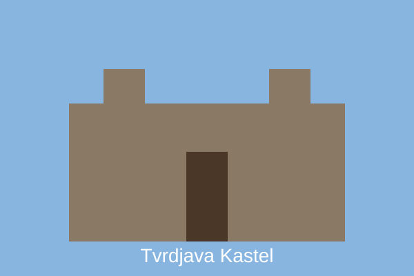
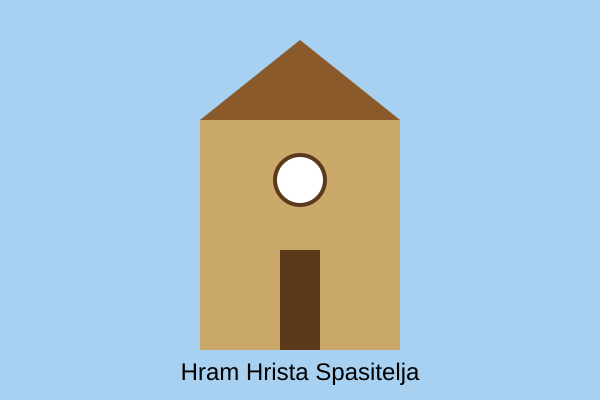
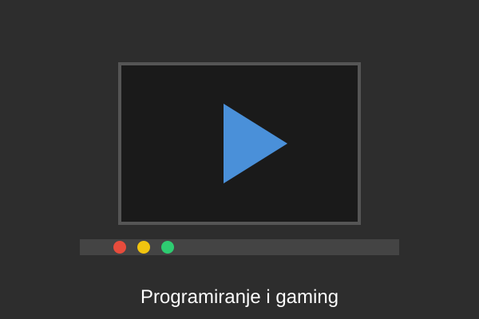

Pohađam Tehničku školu u Banjoj Luci, smjer tehničar informacionih tehnologija. Škola mi pruža odlično znanje iz programiranja, računarskih mreža i elektronike. Omiljeni predmet mi je informatika jer na njoj učimo kako se prave web stranice i programi.
| Čas | Ponedjeljak | Utorak | Srijeda | Četvrtak | Petak |
|---|---|---|---|---|---|
| 1. | Srpski jezik | Matematika | Informatika | Engleski jezik | Fizika |
| 2. | Matematika | Informatika | Matematika | Programiranje | Srpski jezik |
| 3. | Engleski jezik | Programiranje | Fizika | Matematika | Informatika |
| 4. | Istorija | Fizičko vaspitanje | Engleski jezik | Srpski jezik | Programiranje |
| 5. | Likovna kultura | Geografija | Programiranje | Istorija | Fizičko vaspitanje |
| 6. | - | - | Odjeljenjska zajednica | - | - |
Živim u Banjoj Luci, najvećem gradu Republike Srpske i drugom najvećem gradu u Bosni i Hercegovini. Grad je poznat po zelenilu, rijeci Vrbas, drvoredima i gostoprimstvu svojih stanovnika.
Kastel je srednjovjekovna tvrđava u centru grada, na obali rijeke Vrbas. Ovdje se održavaju koncerti, festivali i razne kulturne manifestacije. Omiljeno je mjesto za šetnju i druženje mladih.

Hram Hrista Spasitelja je jedan od najljepših simbola grada, smješten u samom centru. Izgrađen je u srpsko-vizantijskom stilu i mjesto je okupljanja vjernika i turista.

Moj najveći hobi je programiranje. Volim da pravim jednostavne web stranice i igrice. Počeo sam sa HTML-om, a sada učim CSS i JavaScript. Svaki dan odvojim barem sat vremena za vježbanje programiranja.
Drugi hobi mi je košarka. Treniram dva puta sedmično u školskom klubu i redovno igram sa prijateljima na vanjskom terenu. Košarka me naučila timskom radu i upornosti. Pored toga, volim i gaming, muziku i vožnju bicikla.

Nakon završetka srednje škole planiram upisati Fakultet tehničkih nauka ili Elektrotehnički fakultet, smjer softversko inženjerstvo. Želim da postanem web developer, a kasnije da pokrenem vlastitu firmu. Takođe želim da putujem i usavršavam engleski jezik.